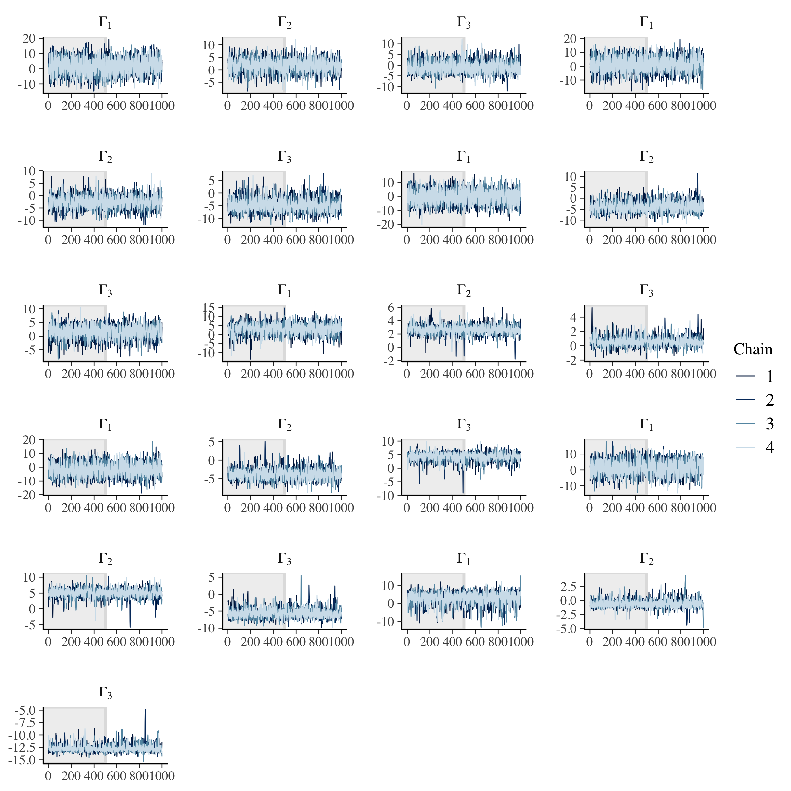
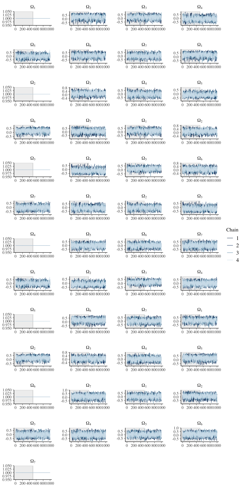
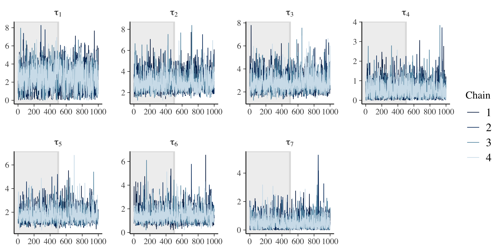
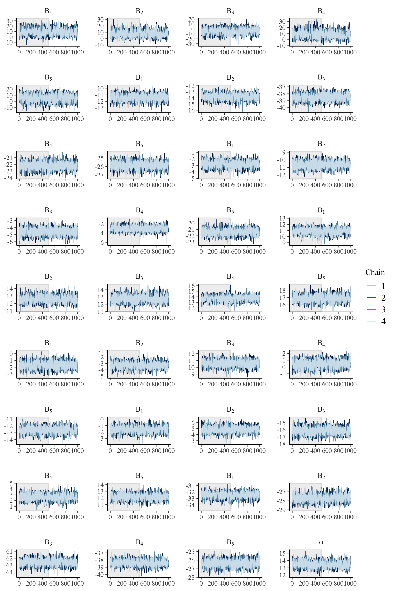
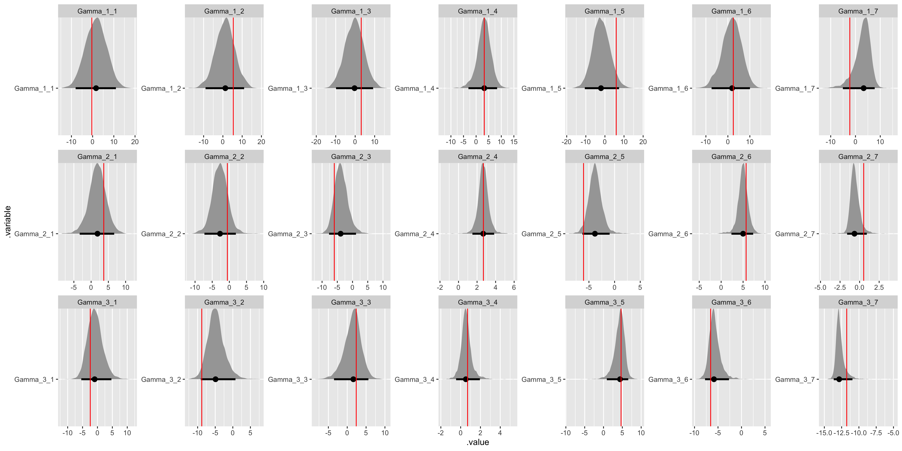
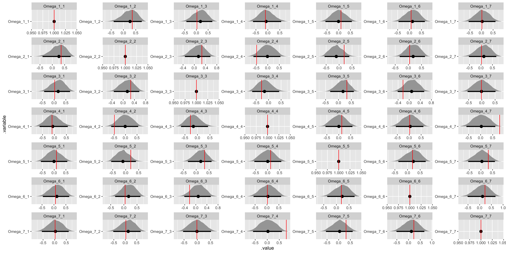
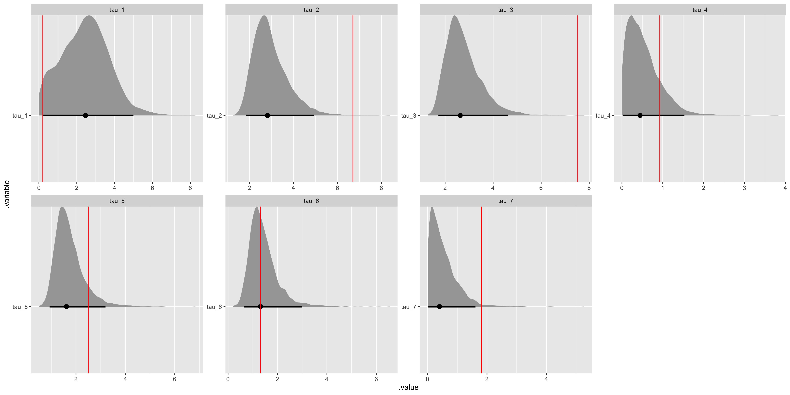
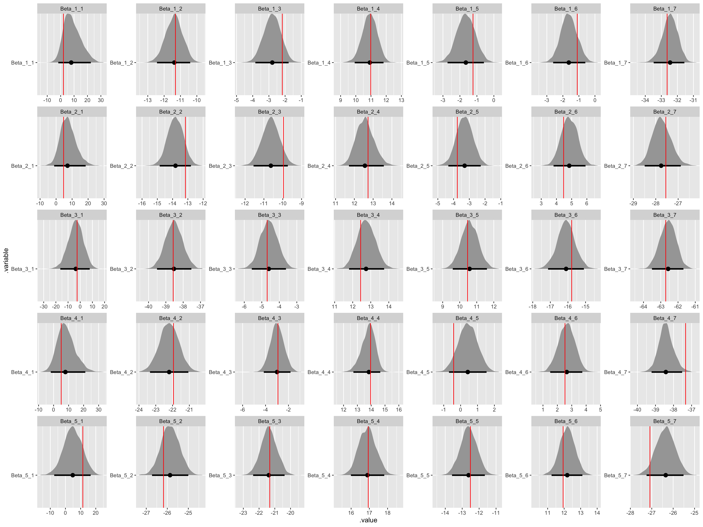
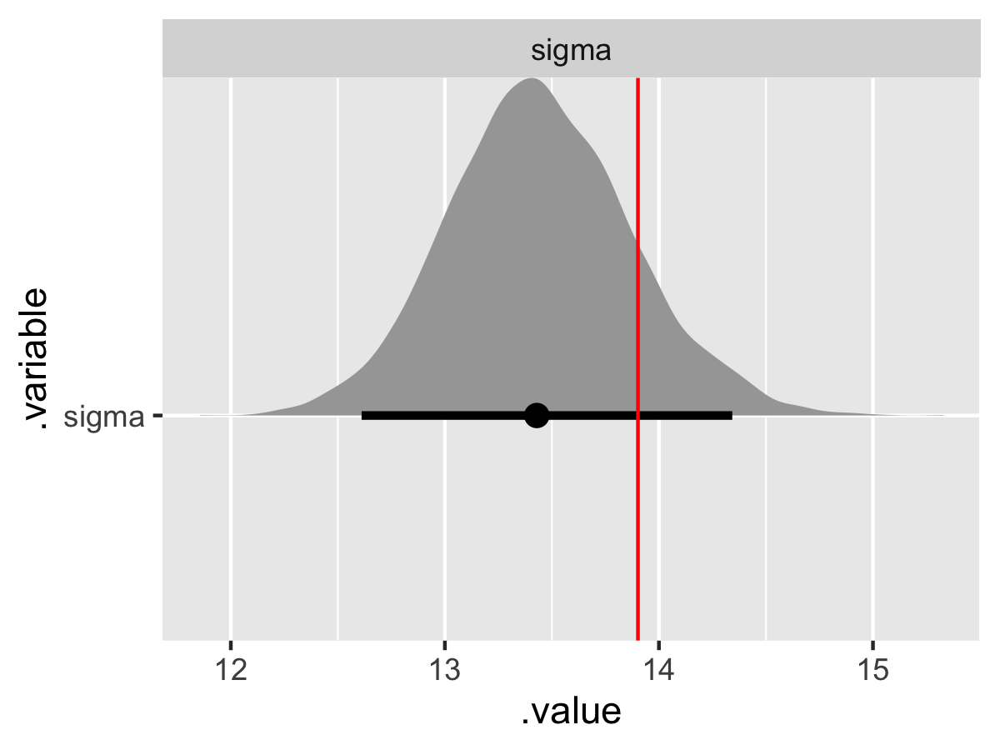

In a previous post, we provided a gentle introduction to hierarchical Bayesian models in Stan. We quickly ran into divergences (i.e., divergent transitions) when attempting to estimate our model. While hierarchical models inherently have posteriors with geometry that can be difficult to navigate, we were able to initially address this problem by more carefully navigating the posterior with a smaller step size.
However, as a hierarchical model becomes more complicated, we need to re-express it in a way that is mathematically equivalent yet results in a posterior that is easier to navigate. We ended that previous post without relaxing the assumption of a common variance in the upper-level population model. In this post, we will build a hierarchical linear model with a multivariate population model. This added complexity will require us to re-express the model using what is known as a non-centered parameterization. Since this more flexible population model specification is standard, a non-centered parameterization should also be our default approach in most applications.
Once again, I am in debt to Michael Betancourt’s case studies, Richard McElreath’s Statistical Rethinking, the Stan User’s Guide, and Stan Discourse.
Recall that the motivation for hierarchical models is to allow for differences across groups while employing partial pooling, striking a balance between no pooling (separate flat models for each group) and complete pooling (a single flat model). However, so far we have assumed a common variance in the population model, limiting how much partial information pooling is possible. By moving to a multivariate population model, we allow for even more pooling through the covariance matrix.
Covariance matrices can be difficult to work with, especially when it comes to setting a prior (or, in our case, a hyperprior). A helpful approach is to break down the covariance matrix into component pieces. Perhaps the most intuitive decomposition is to break down the covariance matrix into variances and a correlation matrix. If we have a covariance matrix Sigma, this decomposition works as follows:
Sigma = diag_matrix(tau) * Omega * diag_matrix(tau)where tau is a vector of scale parameters and Omega is a correlation matrix. Not only is this decomposition computationally more tractable, but it allows us to set a prior on tau and Omega separately rather than on Sigma directly.
So what does a hierarchical model with a multivariate population model look like in Stan?
// Index values, observations, and covariates.
data {
int<lower = 1> N; // Number of observations.
int<lower = 1> K; // Number of groups.
int<lower = 1> I; // Number of observation-level covariates.
int<lower = 1> J; // Number of population-level covariates.
vector[N] y; // Vector of observations.
int<lower = 1, upper = K> g[N]; // Vector of group assignments.
matrix[N, I] X; // Matrix of observation-level covariates.
matrix[K, J] Z; // Matrix of population-level covariates.
}
// Parameters and hyperparameters.
parameters {
matrix[J, I] Gamma; // Matrix of population-level coefficients.
corr_matrix[I] Omega; // Population model correlation matrix.
vector<lower = 0>[I] tau; // Population model scale parameters.
matrix[K, I] Beta; // Matrix of observation-level coefficients.
real<lower = 0> sigma; // Variance of the likelihood.
}
// Hierarchical regression.
model {
// Hyperpriors.
for (j in 1:J) {
Gamma[j,] ~ normal(0, 5);
}
Omega ~ lkj_corr(2);
tau ~ normal(0, 5);
// Prior.
sigma ~ normal(0, 5);
// Population model and likelihood.
for (k in 1:K) {
Beta[k,] ~ multi_normal(Z[k,] * Gamma, quad_form_diag(Omega, tau));
}
for (n in 1:N) {
y[n] ~ normal(X[n,] * Beta[g[n],]', sigma);
}
}We’ll save this Stan script as hlm_centered.stan (where “hlm” refers to a hierarchical linear model and we’ll explain the “centered” part shortly). In the parameters block, we have a correlation matrix Omega and tau is now a vector of scale parameters rather than a scalar. In the models block, Omega is distributed according to the LKJ distribution, a special multivariate Beta-like distribution for correlation matrices. Additionally, Beta is now distributed multivariate normal, with the covariance matrix a recombination of Omega and tau as described above.
Since all Bayesian models are generative, we can translate this Stan script into data and generated quantities blocks and use Stan to generate data for us.
// Index values, covariates, and hyperparameter values.
data {
int<lower = 1> N; // Number of observations.
int<lower = 1> K; // Number of groups.
int<lower = 1> I; // Number of observation-level covariates.
int<lower = 1> J; // Number of population-level covariates.
int<lower = 1, upper = K> g[N]; // Vector of group assignments.
matrix[N, I] X; // Matrix of observation-level covariates.
matrix[K, J] Z; // Matrix of population-level covariates.
}
// Generate data according to the hierarchical regression.
generated quantities {
vector[N] y; // Vector of observations.
matrix[J, I] Gamma; // Matrix of population-level coefficients.
corr_matrix[I] Omega; // Population model correlation matrix.
vector[I] tau; // Population model scale parameters.
matrix[K, I] Beta; // Matrix of group-level coefficients.
real<lower = 0> sigma; // Variance of the likelihood.
// Draw parameter values and generate data.
for (j in 1:J) {
for (i in 1:I) {
Gamma[j, i] = normal_rng(0, 5);
}
}
Omega = lkj_corr_rng(I, 2);
for (i in 1:I) {
tau[i] = chi_square_rng(2);
}
for (k in 1:K) {
Beta[k,] = multi_normal_rng(Z[k,] * Gamma, quad_form_diag(Omega, tau))';
}
sigma = normal_rng(0, 5);
for (n in 1:N) {
y[n] = normal_rng(X[n,] * Beta[g[n],]', sigma);
}
}We’ll save this Stan script as generate_data.stan. Note that instead of specifying parameter values in the data block, we are generating them in generated quantities. This includes using the LKJ prior to generate the values of the correlation matrix Omega. Also, note that since Beta is a matrix where each row is an observation, the vector output of multi_normal_rng is transposed.
In an R script, let’s load the necessary packages, allow Stan to use as many cores as we have available, allow for Stan to save compiled code, specify assumed parameter values, generate data according to our hierarchical linear model by calling generate_data.stan, and estimate our model by calling hlm_centered.stan.
# Load packages.
library(tidyverse)
library(rstan)
library(bayesplot)
library(tidybayes)
# Set Stan options.
options(mc.cores = parallel::detectCores())
rstan_options(auto_write = TRUE)
# Specify data and hyperparameter values.
sim_values <- list(
N = 500, # Number of observations.
K = 5, # Number of groups.
I = 7, # Number of observation-level covariates.
J = 3, # Number of population-level covariates.
# Vector of group assignments.
g = sample(5, 500, replace = TRUE),
# Matrix of observation-level covariates.
X = cbind(
rep(1, 500),
matrix(runif(500 * (7 - 1), min = 1, max = 10), nrow = 500)
),
# Matrix of population-level covariates.
Z = cbind(
rep(1, 5),
matrix(runif(5 * (3 - 1), min = 2, max = 5), nrow = 5)
)
)
# Generate data.
sim_data <- stan(
file = here::here("Code", "generate_data.stan"),
data = sim_values,
iter = 1,
chains = 1,
seed = 42,
algorithm = "Fixed_param"
)
# Extract simulated data and parameters.
sim_y <- extract(sim_data)$y
sim_Gamma <- extract(sim_data)$Gamma
sim_Omega <- extract(sim_data)$Omega
sim_tau <- extract(sim_data)$tau
sim_Beta <- extract(sim_data)$Beta
sim_sigma <- extract(sim_data)$sigma
data <- list(
N = sim_values$N, # Number of observations.
K = sim_values$K, # Number of groups.
I = sim_values$I, # Number of observation-level covariates.
J = sim_values$J, # Number of population-level covariates.
y = as.vector(sim_y), # Vector of observations.
g = sim_values$g, # Vector of group assignments.
X = sim_values$X, # Matrix of observation-level covariates.
Z = sim_values$Z # Matrix of population-level covariates.
)
fit_centered <- stan(
file = here::here("Code", "hlm_centered.stan"),
data = data,
control = list(adapt_delta = 0.99),
seed = 42
)Warning messages:
1: There were 119 divergent transitions after warmup. Increasing adapt_delta above 0.99 may help. See http://mc-stan.org/misc/warnings.html#divergent-transitions-after-warmup
2: There were 3577 transitions after warmup that exceeded the maximum treedepth. Increase max_treedepth above 10. See http://mc-stan.org/misc/warnings.html#maximum-treedepth-exceeded
3: Examine the pairs() plot to diagnose sampling problems
4: Bulk Effective Samples Size (ESS) is too low, indicating posterior means and medians may be unreliable. Running the chains for more iterations may help. See http://mc-stan.org/misc/warnings.html#bulk-ess Running this model gives us more than 100 divergent transitions. Recall that a divergent transition or divergence is a unique Hamiltonian Monte Carlo diagnostic that identifies problems navigating the posterior distribution. These difficulties with posterior geometry are true regardless of the sampler, but Hamiltonian Monte Carlo makes the issue transparent.
We have already set adapt_delta = 0.99, which is the smaller step size we set previously. In order to produce a posterior geometry that can be navigated, we need to reparameterize our model.
The centered parameterization for a hierarchical linear model, as expressed above, has a population model and likelihood:
Beta ~ multi_normal(mu, Sigma)
y ~ normal(Beta, sigma)where we get draws from the posterior distribution of mu and Sigma, the population mean (where we specified mu = Z * Gamma) and covariance (where we specified Sigma = diag_matrix(tau) * Omega * diag_matrix(tau)) and Beta, the group-level coefficients.
The non-centered parameterization re-expresses the population model and likelihood for a hierarchical linear model as:
Delta ~ normal(0, 1)
Beta = mu + Delta * Sigma
y ~ normal(Beta, sigma)where we get draws from the posterior distribution of mu, Sigma, and Delta, since Beta is now a deterministic transformation of the other parameters (i.e., we have Beta = instead of Beta ~). The benefit of a non-centered parameterization – the inclusion of the intermediate Delta and the deterministic transformation of Beta – is that difficult dependencies between the two layers in the hierarchy are broken, producing a simpler posterior geometry.
So what does our hierarchical linear model look like with a non-centered parameterization?
// Index values, observations, and covariates.
data {
int<lower = 1> N; // Number of observations.
int<lower = 1> K; // Number of groups.
int<lower = 1> I; // Number of observation-level covariates.
int<lower = 1> J; // Number of population-level covariates.
vector[N] y; // Vector of observations.
int<lower = 1, upper = K> g[N]; // Vector of group assignments.
matrix[N, I] X; // Matrix of observation-level covariates.
matrix[K, J] Z; // Matrix of population-level covariates.
}
// Parameters and hyperparameters.
parameters {
matrix[J, I] Gamma; // Matrix of population-level coefficients.
corr_matrix[I] Omega; // Population model correlation matrix.
vector<lower = 0>[I] tau; // Population model scale parameters.
matrix[K, I] Delta; // Matrix of observation-level coefficients.
real<lower = 0> sigma; // Variance of the likelihood.
}
// Deterministic transformation.
transformed parameters {
// Matrix of observation-level coefficients.
matrix[K, I] Beta;
// Non-centered parameterization.
for (k in 1:K) {
Beta[k,] = Z[k,] * Gamma + Delta[k,] * quad_form_diag(Omega, tau);
}
}
// Hierarchical regression.
model {
// Hyperpriors.
for (j in 1:J) {
Gamma[j,] ~ normal(0, 5);
}
Omega ~ lkj_corr(2);
tau ~ normal(0, 5);
// Prior.
sigma ~ normal(0, 5);
// Non-centered population model and likelihood.
for (k in 1:K) {
Delta[k,] ~ normal(0, 1);
}
for (n in 1:N) {
y[n] ~ normal(X[n,] * Beta[g[n],]', sigma);
}
}The parameters block now contains Delta instead of Beta, the matrix of non-centered observation-level coefficients. We have an entirely new block transformed parameters that includes our specification of Beta and the deterministic transformation. Finally, the population model in the model block is replaced by a standard normal draw.
We don’t need to generated new data – the generative model remains the same, it’s the model that has been re-expressed with the new parameterization. Let’s call this new script hlm_noncentered.stan from R.
fit_noncentered <- stan(
file = here::here("Code", "hlm_noncentered.stan"),
data = data,
control = list(adapt_delta = 0.99),
seed = 42
)Warning messages:
1: There were 4000 transitions after warmup that exceeded the maximum treedepth. Increase max_treedepth above 10. See http://mc-stan.org/misc/warnings.html#maximum-treedepth-exceeded
2: Examine the pairs() plot to diagnose sampling problems
3: Bulk Effective Samples Size (ESS) is too low, indicating posterior means and medians may be unreliable. Running the chains for more iterations may help. See http://mc-stan.org/misc/warnings.html#bulk-essHuzzah! Divergences are gone. We do have some warnings about max_treedepth, which is a warning about efficiency rather than model validity (more on that at the end), and a notice about Bulk Effective Sample Size that means we should probably run the model longer to establish convergence. To address this latter problem, we can use the iter argument (the default is 2000). Also, if we want to manage the model output file size, we can use thin to keep every few draws instead of saving all of them.
Let’s re-run the model.
fit_noncentered <- stan(
file = here::here("Code", "hlm_noncentered.stan"),
data = data,
iter = 10000,
thin = 5,
control = list(adapt_delta = 0.99),
seed = 42
)Warning messages:
1: There were 4000 transitions after warmup that exceeded the maximum treedepth. Increase max_treedepth above 10. See http://mc-stan.org/misc/warnings.html#maximum-treedepth-exceeded
2: Examine the pairs() plot to diagnose sampling problemsThe model takes longer to run, but we are only left with a warning about efficiency.
As before, let’s evaluate trace plots.
# Check population model trace plots.
gamma_string <- str_c("Gamma[", 1:data$J, ",", 1, "]")
omega_string <- str_c("Omega[", 1:data$I, ",", 1, "]")
tau_string <- str_c("tau[", 1:data$I, "]")
for (i in 2:data$I) {
gamma_temp <- str_c("Gamma[", 1:data$J, ",", i, "]")
gamma_string <- c(gamma_string, gamma_temp)
omega_temp <- str_c("Omega[", 1:data$I, ",", i, "]")
omega_string <- c(omega_string, omega_temp)
}
# Gamma.
fit_noncentered %>%
mcmc_trace(
pars = gamma_string,
n_warmup = 500,
facet_args = list(
nrow = ceiling(length(gamma_string) / 4),
ncol = 4,
labeller = label_parsed
)
)
# Omega.
fit_noncentered %>%
mcmc_trace(
pars = omega_string,
n_warmup = 500,
facet_args = list(
nrow = ceiling(length(omega_string) / 4),
ncol = 4,
labeller = label_parsed
)
)
Note that the diagonal in a correlation matrix is fixed to 1.
# tau.
fit_noncentered %>%
mcmc_trace(
pars = tau_string,
n_warmup = 500,
facet_args = list(
nrow = ceiling(length(tau_string) / 4),
ncol = 4,
labeller = label_parsed
)
)
# Check observation model trace plots.
beta_string <- str_c("Beta[", 1:data$K, ",", 1, "]")
for (i in 2:data$I) {
beta_temp <- str_c("Beta[", 1:data$K, ",", i, "]")
beta_string <- c(beta_string, beta_temp)
}
# Beta and sigma.
fit_noncentered %>%
mcmc_trace(
pars = c(beta_string, "sigma"),
n_warmup = 500,
facet_args = list(
nrow = ceiling(length(c(beta_string, "sigma")) / 4),
ncol = 4,
labeller = label_parsed
)
)
Across population and observation model parameters, we have good mixing and clear convergence across all chains. Now let’s demonstrate parameter recovery for our many model parameters.
# Recover Gamma values.
gamma_values <- tibble(
j = sort(rep(1:(data$J), data$I)),
i = rep(1:(data$I), data$J),
.variable = str_c("Gamma", "_", j, "_", i),
values = as.vector(t(matrix(sim_Gamma, ncol = data$I)))
) %>%
select(.variable, values)
fit_noncentered %>%
gather_draws(Gamma[j, i]) %>%
unite(.variable, .variable, j, i) %>%
ggplot(aes(x = .value, y = .variable)) +
geom_halfeyeh(.width = .95) +
geom_vline(aes(xintercept = values), gamma_values, color = "red") +
facet_wrap(
~ .variable,
nrow = data$J,
ncol = data$I,
scales = "free"
)
# Recover Omega values.
omega_values <- tibble(
j = sort(rep(1:(data$I), data$I)),
i = rep(1:(data$I), data$I),
.variable = str_c("Omega", "_", j, "_", i),
values = as.vector(t(matrix(sim_Omega, ncol = data$I)))
) %>%
select(.variable, values)
fit_noncentered %>%
gather_draws(Omega[j, i]) %>%
unite(.variable, .variable, j, i) %>%
ggplot(aes(x = .value, y = .variable)) +
geom_halfeyeh(.width = .95) +
geom_vline(aes(xintercept = values), omega_values, color = "red") +
facet_wrap(
~ .variable,
nrow = data$I,
ncol = data$I,
scales = "free"
)
Once again, the diagonal in a correlation matrix is fixed at 1.
# Recover tau values.
tau_values <- tibble(
i = 1:(data$I),
.variable = str_c("tau", "_", i),
values = as.vector(sim_tau)
) %>%
select(.variable, values)
fit_noncentered %>%
gather_draws(tau[i]) %>%
unite(.variable, .variable, i) %>%
ggplot(aes(x = .value, y = .variable)) +
geom_halfeyeh(.width = .95) +
geom_vline(aes(xintercept = values), tau_values, color = "red") +
facet_wrap(
~ .variable,
nrow = ceiling(data$I / 4),
ncol = 4,
scales = "free"
)
We have some difficulty recovering the variance parameters in our covariance matrix decomposition.
# Recover Beta values.
beta_values <- tibble(
n = sort(rep(1:(data$K), data$I)),
i = rep(1:(data$I), data$K),
.variable = str_c("Beta", "_", n, "_", i),
values = as.vector(t(matrix(sim_Beta, ncol = data$I)))
) %>%
select(.variable, values)
fit_noncentered %>%
gather_draws(Beta[n, i]) %>%
unite(.variable, .variable, n, i) %>%
ggplot(aes(x = .value, y = .variable)) +
geom_halfeyeh(.width = .95) +
geom_vline(aes(xintercept = values), beta_values, color = "red") +
facet_wrap(
~ .variable,
nrow = data$K,
ncol = data$I,
scales = "free"
)
# Recover sigma value.
sigma_values <- tibble(
.variable = "sigma",
values = sim_sigma,
)
fit_noncentered %>%
gather_draws(sigma) %>%
ggplot(aes(x = .value, y = .variable)) +
geom_halfeyeh(.width = .95) +
geom_vline(aes(xintercept = values), sigma_values, color = "red") +
facet_wrap(
~ .variable,
nrow = 1,
scales = "free"
)
Besides the tau parameters (and variances can be notoriously difficult) we have good convergence and model recovery. To summarize, we have now specified a hierarchical linear model with a multivariate upper-level, generated data according to that model, and used the generated data to demonstrate that the model is working by employing a non-centered parameterization.
The combination of the previous post and this one hopefully provide a helpful and more complete starting point for using hierarchical models in Stan. The max_treedepth warning highlights that all of this code isn’t the most efficient. However, it is often best to worry about readability before optimizing code for efficiency.
The need to impose the non-centered parameterization to break difficult dependencies between the two layers in the hierarchy grows with thinner data or more dimensions, as we saw by introducing a multivariate population model with a covariance matrix. However, the centered and non-centered parameterizations are inversely related in terms of efficiency; when a centered parameterization will suffice, a non-centered parameterization should underperform and when a non-centered parameterization will suffice, a centered parameterization should underperform.
Given that a hierarchical model with a multivariate population model should be our default, so should the requisite non-centered parameterization. This need is true irrespective of the sampler. Using Stan and Hamiltonian Monte Carlo just makes this apparent with the divergences diagnostic.
Marc is an assistant professor of marketing at the BYU Marriott School of Business. He graduated with an MSc from The London School of Economics and Political Science in 2009 and a PhD from The Ohio State University in 2016. His research interests include Bayesian inference, predictive modeling, consumer preference heterogeneity, and unstructured data. Marc teaches marketing analytics. You can find him on Twitter and GitHub.